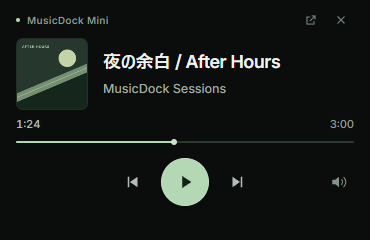

作業の手を止めない
Document Picture-in-Pictureの最前面ウィンドウ。移動やサイズ変更はブラウザ標準の操作で。
SMALL PLAYER. FULL FOCUS.
タブを探す時間を、好きな曲を聴く時間に。
YouTube Musicを、デスクトップの小さな相棒へ。
WINDOWS 10 / 11 · CHROME / EDGE
操作デモ / 音声・YouTube Music接続なし
画面は小さく。音楽の楽しさは、そのまま。
DESIGNED FOR FOCUSLESS DISTRACTION, MORE MUSIC
Document Picture-in-Pictureの最前面ウィンドウ。移動やサイズ変更はブラウザ標準の操作で。
再生・一時停止、前後の曲、シーク、音量。曲名とジャケットもひと目で確認できます。
拡張機能によるアカウント情報の取得、分析、外部送信なし。YouTube Musicのタブ内で動作します。

展開先は、削除しない場所に保管してください。
chrome://extensions または edge://extensions で開発者モードをオンにし、「展開して読み込み」を選択。
すでに開いているタブは更新。曲を選んで、小窓を開くだけ。
A FEW GOOD ANSWERS
拡張機能は無料です。YouTube Music側の料金・広告・再生条件はそのまま適用されます。
最新のデスクトップ版Chrome / EdgeでYouTube Musicを開き、「♫ MINI」を直接クリックしてください。PiPが管理者やブラウザ設定で禁止されている場合は利用できません。
元のYouTube Musicタブは開いたままにしてください。閉じたり再読み込みしたりすると小窓も閉じます。更新後は「♫ MINI」から再起動できます。
元タブで曲を選び直し、通信・再生エラーを確認してください。YouTube MusicのDOM変更により動作しなくなる場合があります。操作対象を取得できないときはボタンを無効にします。
いいえ。Google / YouTubeと提携・承認関係のない第三者ツールです。MusicDock Miniは仮称で、商標登録の確認は完了していません。
MAKE ROOM FOR MUSIC
v2.0.2 プレビュー版 · Chrome / Edge · Windows
2.0.2 · 2026.10.24 Interフォントを同梱し、曲名・アーティスト・再生時間の文字階層を再設計。Windows Chromeで描画検証。
公開状況：ストア未公開。実サービス上の互換性確認は継続中です。デモの曲名・アートは架空です。